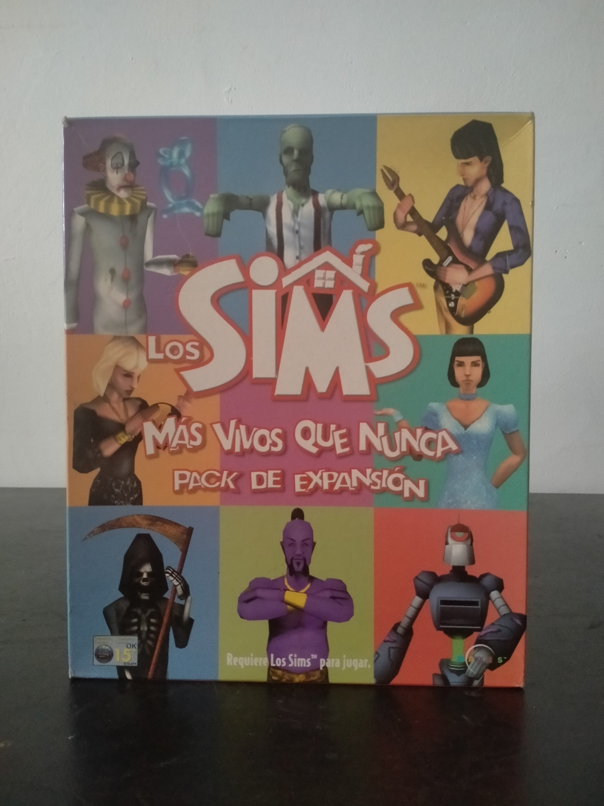

Ficha #000092
Los Sims: Más vivos que nunca
Los Sims: Más Vivos Que Nunca es la primera expansión oficial de Los Sims, publicada en el año 2000 para ampliar el simulador social creado por Maxis bajo la dirección conceptual de Will Wright. Conocida internacionalmente como The Sims: Livin' Large o Livin' It Up según el territorio, esta expansión añadió nuevas profesiones, objetos, estilos arquitectónicos, vecinos, personajes extravagantes y situaciones imprevisibles que reforzaban el carácter emergente y humorístico del juego original. Entre sus aportaciones más recordadas están los nuevos trabajos, objetos como la bola de cristal, la lámpara maravillosa, la cama corazón, el laboratorio químico, la guitarra eléctrica, robots domésticos, fenómenos paranormales y eventos absurdos como plagas, abducciones alienígenas o apariciones de la muerte. Esta edición española en caja grande, traducida al castellano y dependiente del juego base Los Sims, conserva especial interés documental por representar el inicio del modelo de expansiones físicas que marcaría profundamente la historia comercial de la saga en PC.
- Formato
- Big Box
- Plataforma
- Win95 Win98
- Género
- Simulación social Simulación de vida Gestión Construcción Expansión
- Serie
- Todos Big Box Los Sims
- Desarrollador
- Maxis
- Distribuidor
- Electronic Arts, Electronic Arts Software
- EAN
- —
Contenido de la edición
- Caja Big Box
- CD-ROM en caja jewel case
- Manual de instrucciones
- Hoja de requisitos de sistema
Preservación
- Protección
- Verificación de CD
- Formato recomendado
- BIN/CUE
- Jugable en virtualización
- Sí
Preservación recomendada mediante imagen completa del CD-ROM original en BIN/CUE o ISO y conservación conjunta del juego base Los Sims, necesario para instalar y ejecutar la expansión. En entorno virtual conviene usar Windows 95/98 con la imagen montada, verificando la dependencia del disco físico y la compatibilidad con la instalación original.